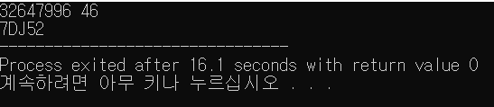

최고차항의 계수가 0이 아니고 음이 아닌 정수 계수의 다항식 \(f(x)=a_nx^n+a_{n-1}x^{n-1}+a_{n-2}x^{n-2}+a_{n-3}x^{n-3}+···+a_1x+a_0\) 이 있다.
\(f(1)=a_n+a_{n-1}+···a_1+a_0=a\)라 하자.
이때 \(a>a_k (0 \leq k \leq n)\) 이 성립한다.
\(f(a)=a_na^n+a_{n-1}a^{n-1}+a_{n-2}a^{n-2}+a_{n-3}a^{n-3}+···+a_1a+a_0\)에서
\(a>a_k\)이므로 위 식은 \(f(a)\)의 값을 \(a\)의 지수로 표현한 값이된다.
따라서 \(f(a)=a_na_{n-1}a_{n-2} \dotsc a_1a_0(a)\)이다.
\((f(a)\)를 \(a\)진수로 나타내면 \(f(x)\)의 각 계수 \(a_n,a_{n-1},a_{n-2}, \dotsc ,a_1,a_0\)가 각 자리수가 된다.)
이를 이용하여 음이 아닌 정수 계수의 다항식 \(f(x)\)를 \(f(1),f(f(1))\) 의 값만 안다면 구할 수 있다.
\(f(1)=a\)로 놓았으므로 10진수 형태의 \(f(f(1))\)을 a진수로 변환한다.
그렇다면 일의 자리부터 각 자리수는 \(a_0,a_{1},a_{2}, \dotsc ,a_{n-1},a_{n}\)과 같다.
이때 각 자리수는 a진법에서의 값이므로 0~9는 그대로, A~Z는 10~27로 변환한다.
\(a_0,a_{1},a_{2}, \dotsc ,a_{n-1},a_{n}\)를 알기때문에 \(f(x)\)를 구할 수 있다.
ex)
\(f(1)=46 , f(f(1))=32647996\) 이라는 값이 주어졌을때 \(f(x)\)를 구해보자.
\(a=46\)이므로
\(f(f(1))\)을 46진수로 나타낸다.
이때는 직접 짠 간단한 C 프로그램을 이용한다.


\(f(a)=7DJ52(a)\)이다. 알파벳을 숫자로 치환하면 \([7, 13, 19, 5, 2]\)이다.
따라서 \(a_4=7, a_3=13, a_2=19, a_1=5, a_0=2\) 이다.
\(\therefore f(x)=7x^4+13x^3+19x^2+5x+2\)
이렇게 \(f(x)\)를 구할 수 있다.
아래에서 직접 이를 시험해볼 수 있다.
항이 2개 이상이고 음이 아닌 정수계수를 가지는\(f(x)\)를 구상한다음 입력하길 권장한다.
| \(f(1) :\) | |
|---|---|
| \(f(f(1)) :\) |